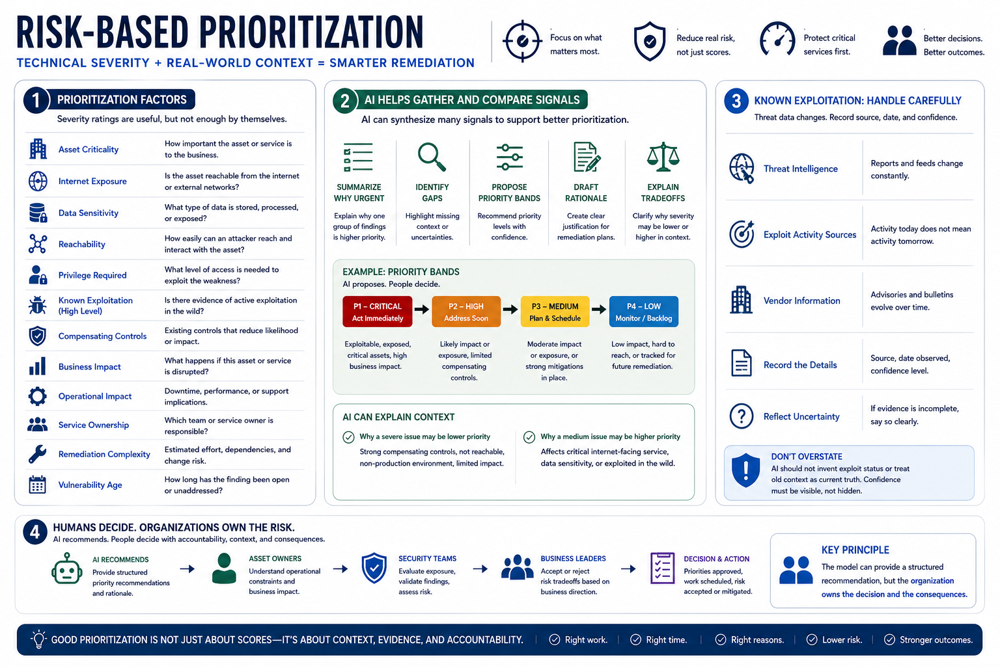

Risk-Based Prioritization
Connecting to LMS... Progress: in progress

Narration
Risk-based prioritization combines technical severity with real-world context. Severity ratings are useful, but they are not enough by themselves. Teams should consider asset criticality, internet exposure, data sensitivity, reachability, privilege required, known exploitation at a high level, compensating controls, business impact, operational impact, service ownership, remediation complexity, and vulnerability age.
AI can help by gathering and comparing those signals. It can summarize why one group of findings appears more urgent than another, identify missing context, propose priority bands, and draft the rationale for a remediation plan. It can also help explain why a technically severe issue may be lower priority when strong compensating controls exist, or why a medium-rated issue may deserve attention because it affects a critical exposed service.
Known exploitation should be treated carefully. Threat intelligence, exploit activity sources, and vendor information change over time. AI should not invent exploit status or treat old context as current truth. Durable workflows record the source, date, and confidence of exploitation signals. If the available evidence is incomplete, the output should reflect that uncertainty instead of presenting a false sense of precision.
AI should recommend priorities, not silently decide them. Prioritization requires human accountability, business context, validation, and risk judgment. Asset owners know operational constraints. Security teams understand exposure. Business leaders accept or reject risk tradeoffs. The model can provide a structured recommendation, but the organization owns the decision and the consequences.